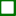
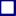

<!doctype html>
<html lang="pl">
    <head>
        <meta charset="utf-8">
        <meta http-equiv="X-UA-Compatible" content="IE=edge">
        <meta name="viewport" content="initial-scale=1,user-scalable=no,maximum-scale=1,width=device-width">
        <meta name="mobile-web-app-capable" content="yes">
        <meta name="apple-mobile-web-app-capable" content="yes">
	<link rel="icon" type="image/x-icon" href="favicon.ico">
        <link rel="stylesheet" href="css/leaflet.css">
        <link rel="stylesheet" href="css/L.Control.Layers.Tree.css">
        <link rel="stylesheet" href="css/L.Control.Locate.min.css">
        <link rel="stylesheet" href="css/qgis2web.css">
        <link rel="stylesheet" href="css/fontawesome-all.min.css">
        <link rel="stylesheet" href="css/leaflet-control-geocoder.Geocoder.css">

		<!-- CSS ekstra (start) -->
		<link rel="stylesheet" href="css/leaflet.contextmenu.css"/>		
		<link rel="stylesheet" href="css/Control.FullScreen.css" />
		<link rel="stylesheet" href="css/Leaflet.NavBar.css" />		
		<link rel="stylesheet" href="css/leaflet-control-boxzoom.css" />	
		<link rel="stylesheet" href="css/leaflet-search.css">
		<link rel="stylesheet" href="css/Leaflet.GraphicScale.min.css" />
		<link rel="stylesheet" href="css/leaflet-control-condensed-attribution.css" />	
		<link rel="stylesheet" href="css/Control.MiniMap.min.css" />
		<!-- CSS ekstra (stop) -->
			
        <style>
        html, body, #map {
            width: 100%;
            height: 100%;
            padding: 0;
            margin: 0;
			cursor: url(css/images/cursor.cur), pointer;		
        }			
		
		<!--  -->
        .search-tip b {
            color: #fff;
            background: #f66;
            display: inline-block;
            clear: left;
            float: right;
            padding: 0 4px;
            margin-left: 4px;
        }

		.PN.search-tip b,
		.PN.leaflet-marker-icon {background: rgba(35,35,35,1.0)}
		.RP.search-tip b,	
		.RP.leaflet-marker-icon {background: rgba(168,0,146,1.0)}
		.PK.search-tip b,	
		.PK.leaflet-marker-icon {background: rgba(0,114,0,1.0)}
		.OChK.search-tip b,	
		.OChK.leaflet-marker-icon {background: rgba(188,105,22,1.0)}
		.N2000SOO.search-tip b,
		.N2000SOO.leaflet-marker-icon {background: rgba(255,145,131,1.0)}
		.N2000OSO.search-tip b,	
		.N2000OSO.leaflet-marker-icon {background: rgba(1,200,255,1.0)}
		.SD.search-tip b,	
		.SD.leaflet-marker-icon {background: rgba(255,203,44,1.0)}
		.UE.search-tip b,	
		.UE.leaflet-marker-icon {background: rgba(255,74,29,1.0)}
		.ZPK.search-tip b,
		.ZPK.leaflet-marker-icon {background: rgba(0,0,127,1.0)}	
	
        .search-tip {
            white-space: nowrap;
        }			
		<!--  -->	
		
        </style>
        <title>Mapa obszarów ochrony przyrody</title>
    </head>
    <body>
        <div id="map">
        </div>
        <script src="js/qgis2web_expressions.js"></script>
        <script src="js/leaflet.js"></script>
        <script src="js/L.Control.Layers.Tree.min.js"></script>
        <script src="js/L.Control.Locate.min.js"></script>
        <script src="js/leaflet.rotatedMarker.js"></script>
        <script src="js/leaflet.pattern.js"></script>
        <script src="js/leaflet-hash.js"></script>
        <script src="js/Autolinker.min.js"></script>
        <script src="js/rbush.min.js"></script>
        <script src="js/labelgun.min.js"></script>
        <script src="js/labels.js"></script>
        <script src="js/leaflet-control-geocoder.Geocoder.js"></script>

		<!-- JS ekstra (start) -->
		<script src="js/leaflet.contextmenu.js"></script>
		<script src="js/Control.FullScreen.js"></script>
		<script src="js/Leaflet.NavBar.js"></script>		
        <script src="js/leaflet-control-boxzoom.js"></script>		
		<script src="js/leaflet.browser.print.min.js"></script>
		<script src="js/leaflet-search.js"></script>
		<script src="js/Leaflet.GraphicScale.min.js"></script>
		<script src="js/leaflet-control-condensed-attribution.js"></script>
		<script src="js/Control.MiniMap.min.js"></script>
        <script src="js/leaflet.mask.js"></script>
		<!-- JS ekstra (stop) -->
		
        <script src="data/Obszarychronionegokrajobrazu_1.js"></script>
        <script src="data/Parkikrajobrazowe_2.js"></script>
        <script src="data/Natura2000OSO_3.js"></script>
        <script src="data/Natura2000SOO_4.js"></script>
        <script src="data/Rezerwatyprzyrody_5.js"></script>
        <script src="data/Zespoyprzyrodniczokrajobrazowe_6.js"></script>
        <script src="data/Uytkiekologiczne_7.js"></script>
        <script src="data/Stanowiskadokumentacyjne_8.js"></script>
        <script src="data/Parkinarodowe_9.js"></script>
        <script>
 
 var map = L.map('map', {
 
		//Plugin Contextmenu (start1)		
		contextmenu: true,
		contextmenuItems: [{
		      text: '  ',			  
	      }, '-',{
		      text: 'Współrzędne',
			  icon: 'css/images/coords.png',
		      callback: showCoordinates
	      }, '-', {
		      text: 'Powiększ',
		      icon: 'css/images/zoom-in.png',
		      callback: zoomIn
	      },{
			  text: 'Pomniejsz',
		      icon: 'css/images/zoom-out.png',
		      callback: zoomOut
	      }, {
		      text: 'Wycentruj',
			  icon: 'css/images/center.png',
		      callback: centerMap	  
          }, '-', {
		      text: '  ',		  	  
	  }],
		//Plugin Contextmenu (stop1)	
		
		//Plugin condensedAttributionControl (start1)		
   	    condensedAttributionControl: false,
		//Plugin condensedAttributionControl (stop1)		 

            zoomControl:false, maxZoom:28, minZoom:1
        }).fitBounds([[49.11302044706609,18.550759876028856],[50.558074539615866,22.007038838246032]]);
        var hash = new L.Hash(map);
		
		//Plugin Contextmenu (start2)			
     function showCoordinates (e) {
	      alert(e.latlng);}
      function centerMap (e) {
	      map.panTo(e.latlng);}
      function zoomIn (e) {
	      map.zoomIn();}
      function zoomOut (e) {
	      map.zoomOut();}
		//Plugin Contextmenu (stop2)		
			
//Delete konflikt z Plugin control-condensed-attribution (start)
//		map.attributionControl.setPrefix('<a href="https://github.com/tomchadwin/qgis2web" target="_blank">qgis2web</a> &middot; <a href="https://leafletjs.com" title="A JS library for interactive maps">Leaflet</a> &middot; <a href="https://qgis.org">QGIS</a>');
//Delete konflikt z Plugin control-condensed-attribution (stop)

        var autolinker = new Autolinker({truncate: {length: 30, location: 'smart'}});
        // remove popup's row if "visible-with-data"
        function removeEmptyRowsFromPopupContent(content, feature) {
         var tempDiv = document.createElement('div');
         tempDiv.innerHTML = content;
         var rows = tempDiv.querySelectorAll('tr');
         for (var i = 0; i < rows.length; i++) {
             var td = rows[i].querySelector('td.visible-with-data');
             var key = td ? td.id : '';
             if (td && td.classList.contains('visible-with-data') && feature.properties[key] == null) {
                 rows[i].parentNode.removeChild(rows[i]);
             }
         }
         return tempDiv.innerHTML;
        }
        // add class to format popup if it contains media
		function addClassToPopupIfMedia(content, popup) {
			var tempDiv = document.createElement('div');
			tempDiv.innerHTML = content;
			if (tempDiv.querySelector('td img')) {
				popup._contentNode.classList.add('media');
					// Delay to force the redraw
					setTimeout(function() {
						popup.update();
					}, 10);
			} else {
				popup._contentNode.classList.remove('media');
			}
		}
        var title = new L.Control({'position':'topleft'});
        title.onAdd = function (map) {
            this._div = L.DomUtil.create('div', 'info');
            this.update();
            return this._div;
        };
        title.update = function () {
            this._div.innerHTML = '<h2 style="color:olive";>OBSZARY OCHRONY PRZYRODY</h2>';
        };
        title.addTo(map);
        var abstract = new L.Control({'position':'topleft'});
        abstract.onAdd = function (map) {
            this._div = L.DomUtil.create('div',
            'leaflet-control abstract');
            this._div.id = 'abstract'

                abstract.show();
                return this._div;
            };
            abstract.show = function () {
                this._div.classList.remove("abstract");
                this._div.classList.add("abstractUncollapsed");
                this._div.innerHTML = 'Województwo Małopolskie';
        };
        abstract.addTo(map);
		
		//Plugin Control.FullScreen (start)
		var fsControl = L.control.fullscreen({
            position: 'topright'});
		map.addControl(fsControl);		
		//Plugin Control.FullScreen (stop)	
	
		//Plugin control.locate <opcje> (start)	
		var lc = L.control
		.locate({
		position: "topright",
// 		icon: 'fas fa-crosshairs fa-lg',
		strings: {
		title: "Lokalizacja"
		}})
		//Plugin control.locate <opcje> (stop)	
		
		L.control.locate({locateOptions:{maxZoom: 19}}).addTo(map);

		//Plugin Navbar (start)		
	    L.control.navbar({
            position: 'topright'
        }).addTo(map);	
		//Plugin Navbar (stop)		
		
		//Plugin Control.boxzoom (start)	
		 L.Control.boxzoom({
            position:'topright',
        }).addTo(map);
		//Plugin Control.boxzoom (stop)				
				
        var zoomControl = L.control.zoom({
            position: 'topright'
        }).addTo(map);
        var bounds_group = new L.featureGroup([]);
        function setBounds() {
        }
        map.createPane('pane_OSMStandard_0');
        map.getPane('pane_OSMStandard_0').style.zIndex = 400;
        var layer_OSMStandard_0 = L.tileLayer('http://tile.openstreetmap.org/{z}/{x}/{y}.png', {
            pane: 'pane_OSMStandard_0',
            opacity: 1.0,
            attribution: '<a href="https://www.openstreetmap.org/copyright">© OpenStreetMap contributors, CC-BY-SA</a>',
            minZoom: 1,
            maxZoom: 28,
            minNativeZoom: 0,
            maxNativeZoom: 19
        });
        layer_OSMStandard_0;
        map.addLayer(layer_OSMStandard_0);
        function pop_Obszarychronionegokrajobrazu_1(feature, layer) {
            var popupContent = '<table>\
                    <tr>\
                        <th scope="row">nazwa</th>\
                        <td>' + (feature.properties['nazwa'] !== null ? autolinker.link(feature.properties['nazwa'].toLocaleString()) : '') + '</td>\
                    </tr>\
                    <tr>\
                        <th scope="row">kodinspire</th>\
                        <td>' + (feature.properties['kodinspire'] !== null ? autolinker.link(feature.properties['kodinspire'].toLocaleString()) : '') + '</td>\
                    </tr>\
                    <tr>\
                        <th scope="row">rodzaj</th>\
                        <td>' + (feature.properties['rodzaj'] !== null ? autolinker.link(feature.properties['rodzaj'].toLocaleString()) : '') + '</td>\
                    </tr>\
                </table>';
            var content = removeEmptyRowsFromPopupContent(popupContent, feature);
			layer.on('popupopen', function(e) {
				addClassToPopupIfMedia(content, e.popup);
			});
			layer.bindPopup(content, { maxHeight: 400 });
        }

        function style_Obszarychronionegokrajobrazu_1_0() {
            return {
                pane: 'pane_Obszarychronionegokrajobrazu_1',
                opacity: 1,
                color: 'rgba(188,105,22,1.0)',
                dashArray: '',
                lineCap: 'square',
                lineJoin: 'bevel',
                weight: 3.0,
                fillOpacity: 0,
                interactive: true,
            }
        }
        map.createPane('pane_Obszarychronionegokrajobrazu_1');
        map.getPane('pane_Obszarychronionegokrajobrazu_1').style.zIndex = 401;
        map.getPane('pane_Obszarychronionegokrajobrazu_1').style['mix-blend-mode'] = 'normal';
        var layer_Obszarychronionegokrajobrazu_1 = new L.geoJson(json_Obszarychronionegokrajobrazu_1, {
            attribution: '',
            interactive: true,
            dataVar: 'json_Obszarychronionegokrajobrazu_1',
            layerName: 'layer_Obszarychronionegokrajobrazu_1',
            pane: 'pane_Obszarychronionegokrajobrazu_1',
            onEachFeature: pop_Obszarychronionegokrajobrazu_1,
            style: style_Obszarychronionegokrajobrazu_1_0,
        });
        bounds_group.addLayer(layer_Obszarychronionegokrajobrazu_1);
        map.addLayer(layer_Obszarychronionegokrajobrazu_1);
        function pop_Parkikrajobrazowe_2(feature, layer) {
            var popupContent = '<table>\
                    <tr>\
                        <th scope="row">nazwa</th>\
                        <td>' + (feature.properties['nazwa'] !== null ? autolinker.link(feature.properties['nazwa'].toLocaleString()) : '') + '</td>\
                    </tr>\
                    <tr>\
                        <th scope="row">kodinspire</th>\
                        <td>' + (feature.properties['kodinspire'] !== null ? autolinker.link(feature.properties['kodinspire'].toLocaleString()) : '') + '</td>\
                    </tr>\
                    <tr>\
                        <th scope="row">rodzaj</th>\
                        <td>' + (feature.properties['rodzaj'] !== null ? autolinker.link(feature.properties['rodzaj'].toLocaleString()) : '') + '</td>\
                    </tr>\
                </table>';
            var content = removeEmptyRowsFromPopupContent(popupContent, feature);
			layer.on('popupopen', function(e) {
				addClassToPopupIfMedia(content, e.popup);
			});
			layer.bindPopup(content, { maxHeight: 400 });
        }

        function style_Parkikrajobrazowe_2_0() {
            return {
                pane: 'pane_Parkikrajobrazowe_2',
                opacity: 1,
                color: 'rgba(0,114,0,1.0)',
                dashArray: '',
                lineCap: 'square',
                lineJoin: 'bevel',
                weight: 3.0,
                fillOpacity: 0,
                interactive: true,
            }
        }
        map.createPane('pane_Parkikrajobrazowe_2');
        map.getPane('pane_Parkikrajobrazowe_2').style.zIndex = 402;
        map.getPane('pane_Parkikrajobrazowe_2').style['mix-blend-mode'] = 'normal';
        var layer_Parkikrajobrazowe_2 = new L.geoJson(json_Parkikrajobrazowe_2, {
            attribution: '',
            interactive: true,
            dataVar: 'json_Parkikrajobrazowe_2',
            layerName: 'layer_Parkikrajobrazowe_2',
            pane: 'pane_Parkikrajobrazowe_2',
            onEachFeature: pop_Parkikrajobrazowe_2,
            style: style_Parkikrajobrazowe_2_0,
        });
        bounds_group.addLayer(layer_Parkikrajobrazowe_2);
        map.addLayer(layer_Parkikrajobrazowe_2);
        function pop_Natura2000OSO_3(feature, layer) {
            var popupContent = '<table>\
                    <tr>\
                        <th scope="row">nazwa</th>\
                        <td>' + (feature.properties['nazwa'] !== null ? autolinker.link(feature.properties['nazwa'].toLocaleString()) : '') + '</td>\
                    </tr>\
                    <tr>\
                        <th scope="row">kod</th>\
                        <td>' + (feature.properties['kod'] !== null ? autolinker.link(feature.properties['kod'].toLocaleString()) : '') + '</td>\
                    </tr>\
                    <tr>\
                        <th scope="row">kodinspire</th>\
                        <td>' + (feature.properties['kodinspire'] !== null ? autolinker.link(feature.properties['kodinspire'].toLocaleString()) : '') + '</td>\
                    </tr>\
                    <tr>\
                        <th scope="row">rodzaj</th>\
                        <td>' + (feature.properties['rodzaj'] !== null ? autolinker.link(feature.properties['rodzaj'].toLocaleString()) : '') + '</td>\
                    </tr>\
                </table>';
            var content = removeEmptyRowsFromPopupContent(popupContent, feature);
			layer.on('popupopen', function(e) {
				addClassToPopupIfMedia(content, e.popup);
			});
			layer.bindPopup(content, { maxHeight: 400 });
        }

        function style_Natura2000OSO_3_0() {
            return {
                pane: 'pane_Natura2000OSO_3',
                opacity: 1,
                color: 'rgba(1,200,255,0.5)',
                dashArray: '',
                lineCap: 'square',
                lineJoin: 'bevel',
                weight: 3.0,
                fillOpacity: 0,
                interactive: true,
            }
        }
        map.createPane('pane_Natura2000OSO_3');
        map.getPane('pane_Natura2000OSO_3').style.zIndex = 403;
        map.getPane('pane_Natura2000OSO_3').style['mix-blend-mode'] = 'normal';
        var layer_Natura2000OSO_3 = new L.geoJson(json_Natura2000OSO_3, {
            attribution: '',
            interactive: true,
            dataVar: 'json_Natura2000OSO_3',
            layerName: 'layer_Natura2000OSO_3',
            pane: 'pane_Natura2000OSO_3',
            onEachFeature: pop_Natura2000OSO_3,
            style: style_Natura2000OSO_3_0,
        });
        bounds_group.addLayer(layer_Natura2000OSO_3);
        map.addLayer(layer_Natura2000OSO_3);
        function pop_Natura2000SOO_4(feature, layer) {
            var popupContent = '<table>\
                    <tr>\
                        <th scope="row">nazwa</th>\
                        <td>' + (feature.properties['nazwa'] !== null ? autolinker.link(feature.properties['nazwa'].toLocaleString()) : '') + '</td>\
                    </tr>\
                    <tr>\
                        <th scope="row">kod</th>\
                        <td>' + (feature.properties['kod'] !== null ? autolinker.link(feature.properties['kod'].toLocaleString()) : '') + '</td>\
                    </tr>\
                    <tr>\
                        <th scope="row">kodinspire</th>\
                        <td>' + (feature.properties['kodinspire'] !== null ? autolinker.link(feature.properties['kodinspire'].toLocaleString()) : '') + '</td>\
                    </tr>\
                    <tr>\
                        <th scope="row">rodzaj</th>\
                        <td>' + (feature.properties['rodzaj'] !== null ? autolinker.link(feature.properties['rodzaj'].toLocaleString()) : '') + '</td>\
                    </tr>\
                </table>';
            var content = removeEmptyRowsFromPopupContent(popupContent, feature);
			layer.on('popupopen', function(e) {
				addClassToPopupIfMedia(content, e.popup);
			});
			layer.bindPopup(content, { maxHeight: 400 });
        }

        function style_Natura2000SOO_4_0() {
            return {
                pane: 'pane_Natura2000SOO_4',
                opacity: 1,
                color: 'rgba(255,145,131,0.5)',
                dashArray: '',
                lineCap: 'square',
                lineJoin: 'bevel',
                weight: 3.0,
                fillOpacity: 0,
                interactive: true,
            }
        }
        map.createPane('pane_Natura2000SOO_4');
        map.getPane('pane_Natura2000SOO_4').style.zIndex = 404;
        map.getPane('pane_Natura2000SOO_4').style['mix-blend-mode'] = 'normal';
        var layer_Natura2000SOO_4 = new L.geoJson(json_Natura2000SOO_4, {
            attribution: '',
            interactive: true,
            dataVar: 'json_Natura2000SOO_4',
            layerName: 'layer_Natura2000SOO_4',
            pane: 'pane_Natura2000SOO_4',
            onEachFeature: pop_Natura2000SOO_4,
            style: style_Natura2000SOO_4_0,
        });
        bounds_group.addLayer(layer_Natura2000SOO_4);
        map.addLayer(layer_Natura2000SOO_4);
        function pop_Rezerwatyprzyrody_5(feature, layer) {
            var popupContent = '<table>\
                    <tr>\
                        <th scope="row">nazwa</th>\
                        <td>' + (feature.properties['nazwa'] !== null ? autolinker.link(feature.properties['nazwa'].toLocaleString()) : '') + '</td>\
                    </tr>\
                    <tr>\
                        <th scope="row">kodinspire</th>\
                        <td>' + (feature.properties['kodinspire'] !== null ? autolinker.link(feature.properties['kodinspire'].toLocaleString()) : '') + '</td>\
                    </tr>\
                    <tr>\
                        <th scope="row">rodzaj</th>\
                        <td>' + (feature.properties['rodzaj'] !== null ? autolinker.link(feature.properties['rodzaj'].toLocaleString()) : '') + '</td>\
                    </tr>\
                </table>';
            var content = removeEmptyRowsFromPopupContent(popupContent, feature);
			layer.on('popupopen', function(e) {
				addClassToPopupIfMedia(content, e.popup);
			});
			layer.bindPopup(content, { maxHeight: 400 });
        }

        function style_Rezerwatyprzyrody_5_0() {
            return {
                pane: 'pane_Rezerwatyprzyrody_5',
                opacity: 1,
                color: 'rgba(168,0,146,1.0)',
                dashArray: '',
                lineCap: 'square',
                lineJoin: 'bevel',
                weight: 3.0,
                fillOpacity: 0,
                interactive: true,
            }
        }
        map.createPane('pane_Rezerwatyprzyrody_5');
        map.getPane('pane_Rezerwatyprzyrody_5').style.zIndex = 405;
        map.getPane('pane_Rezerwatyprzyrody_5').style['mix-blend-mode'] = 'normal';
        var layer_Rezerwatyprzyrody_5 = new L.geoJson(json_Rezerwatyprzyrody_5, {
            attribution: '',
            interactive: true,
            dataVar: 'json_Rezerwatyprzyrody_5',
            layerName: 'layer_Rezerwatyprzyrody_5',
            pane: 'pane_Rezerwatyprzyrody_5',
            onEachFeature: pop_Rezerwatyprzyrody_5,
            style: style_Rezerwatyprzyrody_5_0,
        });
        bounds_group.addLayer(layer_Rezerwatyprzyrody_5);
        map.addLayer(layer_Rezerwatyprzyrody_5);
        function pop_Zespoyprzyrodniczokrajobrazowe_6(feature, layer) {
            var popupContent = '<table>\
                    <tr>\
                        <th scope="row">nazwa</th>\
                        <td>' + (feature.properties['nazwa'] !== null ? autolinker.link(feature.properties['nazwa'].toLocaleString()) : '') + '</td>\
                    </tr>\
                    <tr>\
                        <th scope="row">kodinspire</th>\
                        <td>' + (feature.properties['kodinspire'] !== null ? autolinker.link(feature.properties['kodinspire'].toLocaleString()) : '') + '</td>\
                    </tr>\
                    <tr>\
                        <th scope="row">rodzaj</th>\
                        <td>' + (feature.properties['rodzaj'] !== null ? autolinker.link(feature.properties['rodzaj'].toLocaleString()) : '') + '</td>\
                    </tr>\
                </table>';
            var content = removeEmptyRowsFromPopupContent(popupContent, feature);
			layer.on('popupopen', function(e) {
				addClassToPopupIfMedia(content, e.popup);
			});
			layer.bindPopup(content, { maxHeight: 400 });
        }

        function style_Zespoyprzyrodniczokrajobrazowe_6_0() {
            return {
                pane: 'pane_Zespoyprzyrodniczokrajobrazowe_6',
                opacity: 1,
                color: 'rgba(0,0,127,1.0)',
                dashArray: '',
                lineCap: 'square',
                lineJoin: 'bevel',
                weight: 3.0,
                fillOpacity: 0,
                interactive: true,
            }
        }
        map.createPane('pane_Zespoyprzyrodniczokrajobrazowe_6');
        map.getPane('pane_Zespoyprzyrodniczokrajobrazowe_6').style.zIndex = 406;
        map.getPane('pane_Zespoyprzyrodniczokrajobrazowe_6').style['mix-blend-mode'] = 'normal';
        var layer_Zespoyprzyrodniczokrajobrazowe_6 = new L.geoJson(json_Zespoyprzyrodniczokrajobrazowe_6, {
            attribution: '',
            interactive: true,
            dataVar: 'json_Zespoyprzyrodniczokrajobrazowe_6',
            layerName: 'layer_Zespoyprzyrodniczokrajobrazowe_6',
            pane: 'pane_Zespoyprzyrodniczokrajobrazowe_6',
            onEachFeature: pop_Zespoyprzyrodniczokrajobrazowe_6,
            style: style_Zespoyprzyrodniczokrajobrazowe_6_0,
        });
        bounds_group.addLayer(layer_Zespoyprzyrodniczokrajobrazowe_6);
        map.addLayer(layer_Zespoyprzyrodniczokrajobrazowe_6);
        function pop_Uytkiekologiczne_7(feature, layer) {
            var popupContent = '<table>\
                    <tr>\
                        <th scope="row">nazwa</th>\
                        <td>' + (feature.properties['nazwa'] !== null ? autolinker.link(feature.properties['nazwa'].toLocaleString()) : '') + '</td>\
                    </tr>\
                    <tr>\
                        <th scope="row">kodinspire</th>\
                        <td>' + (feature.properties['kodinspire'] !== null ? autolinker.link(feature.properties['kodinspire'].toLocaleString()) : '') + '</td>\
                    </tr>\
                    <tr>\
                        <th scope="row">rodzaj</th>\
                        <td>' + (feature.properties['rodzaj'] !== null ? autolinker.link(feature.properties['rodzaj'].toLocaleString()) : '') + '</td>\
                    </tr>\
                </table>';
            var content = removeEmptyRowsFromPopupContent(popupContent, feature);
			layer.on('popupopen', function(e) {
				addClassToPopupIfMedia(content, e.popup);
			});
			layer.bindPopup(content, { maxHeight: 400 });
        }

        function style_Uytkiekologiczne_7_0() {
            return {
                pane: 'pane_Uytkiekologiczne_7',
                opacity: 1,
                color: 'rgba(255,74,29,1.0)',
                dashArray: '',
                lineCap: 'square',
                lineJoin: 'bevel',
                weight: 3.0,
                fillOpacity: 0,
                interactive: true,
            }
        }
        map.createPane('pane_Uytkiekologiczne_7');
        map.getPane('pane_Uytkiekologiczne_7').style.zIndex = 407;
        map.getPane('pane_Uytkiekologiczne_7').style['mix-blend-mode'] = 'normal';
        var layer_Uytkiekologiczne_7 = new L.geoJson(json_Uytkiekologiczne_7, {
            attribution: '',
            interactive: true,
            dataVar: 'json_Uytkiekologiczne_7',
            layerName: 'layer_Uytkiekologiczne_7',
            pane: 'pane_Uytkiekologiczne_7',
            onEachFeature: pop_Uytkiekologiczne_7,
            style: style_Uytkiekologiczne_7_0,
        });
        bounds_group.addLayer(layer_Uytkiekologiczne_7);
        map.addLayer(layer_Uytkiekologiczne_7);
        function pop_Stanowiskadokumentacyjne_8(feature, layer) {
            var popupContent = '<table>\
                    <tr>\
                        <th scope="row">rzedna</th>\
                        <td>' + (feature.properties['rzedna'] !== null ? autolinker.link(feature.properties['rzedna'].toLocaleString()) : '') + '</td>\
                    </tr>\
                    <tr>\
                        <th scope="row">nazwa</th>\
                        <td>' + (feature.properties['nazwa'] !== null ? autolinker.link(feature.properties['nazwa'].toLocaleString()) : '') + '</td>\
                    </tr>\
                    <tr>\
                        <th scope="row">kodinspire</th>\
                        <td>' + (feature.properties['kodinspire'] !== null ? autolinker.link(feature.properties['kodinspire'].toLocaleString()) : '') + '</td>\
                    </tr>\
                    <tr>\
                        <th scope="row">rodzaj</th>\
                        <td>' + (feature.properties['rodzaj'] !== null ? autolinker.link(feature.properties['rodzaj'].toLocaleString()) : '') + '</td>\
                    </tr>\
                </table>';
            var content = removeEmptyRowsFromPopupContent(popupContent, feature);
			layer.on('popupopen', function(e) {
				addClassToPopupIfMedia(content, e.popup);
			});
			layer.bindPopup(content, { maxHeight: 400 });
        }

        function style_Stanowiskadokumentacyjne_8_0() {
            return {
                pane: 'pane_Stanowiskadokumentacyjne_8',
                opacity: 1,
                color: 'rgba(255,203,44,1.0)',
                dashArray: '',
                lineCap: 'square',
                lineJoin: 'bevel',
                weight: 3.0,
                fillOpacity: 0,
                interactive: true,
            }
        }
        map.createPane('pane_Stanowiskadokumentacyjne_8');
        map.getPane('pane_Stanowiskadokumentacyjne_8').style.zIndex = 408;
        map.getPane('pane_Stanowiskadokumentacyjne_8').style['mix-blend-mode'] = 'normal';
        var layer_Stanowiskadokumentacyjne_8 = new L.geoJson(json_Stanowiskadokumentacyjne_8, {
            attribution: '',
            interactive: true,
            dataVar: 'json_Stanowiskadokumentacyjne_8',
            layerName: 'layer_Stanowiskadokumentacyjne_8',
            pane: 'pane_Stanowiskadokumentacyjne_8',
            onEachFeature: pop_Stanowiskadokumentacyjne_8,
            style: style_Stanowiskadokumentacyjne_8_0,
        });
        bounds_group.addLayer(layer_Stanowiskadokumentacyjne_8);
        map.addLayer(layer_Stanowiskadokumentacyjne_8);
        function pop_Parkinarodowe_9(feature, layer) {
            var popupContent = '<table>\
                    <tr>\
                        <th scope="row">nazwa</th>\
                        <td>' + (feature.properties['nazwa'] !== null ? autolinker.link(feature.properties['nazwa'].toLocaleString()) : '') + '</td>\
                    </tr>\
                    <tr>\
                        <th scope="row">kodinspire</th>\
                        <td>' + (feature.properties['kodinspire'] !== null ? autolinker.link(feature.properties['kodinspire'].toLocaleString()) : '') + '</td>\
                    </tr>\
                    <tr>\
                        <th scope="row">rodzaj</th>\
                        <td>' + (feature.properties['rodzaj'] !== null ? autolinker.link(feature.properties['rodzaj'].toLocaleString()) : '') + '</td>\
                    </tr>\
                </table>';
            var content = removeEmptyRowsFromPopupContent(popupContent, feature);
			layer.on('popupopen', function(e) {
				addClassToPopupIfMedia(content, e.popup);
			});
			layer.bindPopup(content, { maxHeight: 400 });
        }

        function style_Parkinarodowe_9_0() {
            return {
                pane: 'pane_Parkinarodowe_9',
                opacity: 1,
                color: 'rgba(35,35,35,1.0)',
                dashArray: '',
                lineCap: 'square',
                lineJoin: 'bevel',
                weight: 3.0,
                fillOpacity: 0,
                interactive: true,
            }
        }
        map.createPane('pane_Parkinarodowe_9');
        map.getPane('pane_Parkinarodowe_9').style.zIndex = 409;
        map.getPane('pane_Parkinarodowe_9').style['mix-blend-mode'] = 'normal';
        var layer_Parkinarodowe_9 = new L.geoJson(json_Parkinarodowe_9, {
            attribution: '',
            interactive: true,
            dataVar: 'json_Parkinarodowe_9',
            layerName: 'layer_Parkinarodowe_9',
            pane: 'pane_Parkinarodowe_9',
            onEachFeature: pop_Parkinarodowe_9,
            style: style_Parkinarodowe_9_0,
        });
        bounds_group.addLayer(layer_Parkinarodowe_9);
        map.addLayer(layer_Parkinarodowe_9);
		
		//Plugin L.mask (start)		
		L.mask('data/WM.json', {fillOpacity: 0.7,}).addTo(map);
		//Plugin L.mask (stop)
		
		//Plugin browserPrint (start)
	var browserPrint = L.browserPrint(map,{debug:false, cancelWithEsc: true});
    var c = L.control.browserPrint({
		position: 'topright',
		title: 'Drukowanie widoku mapy',		
        printModes: [
            L.BrowserPrint.Mode.Landscape('A4',{margin: 0, 
			header: {
                enabled: true,
                text: "<span> </span>",
                size: "10mm",
                overTheMap: false,},
            footer: {
                enabled: true,
                text: "<span> </span>",
                size: "10mm",
                overTheMap: false,}
				}) ]}, browserPrint).addTo(map);
		//Plugin browserPrint (stop)	
			
         var osmGeocoder = new L.Control.Geocoder({
            collapsed: true,
            position: 'topright',
            text: 'Wyszukiwanie',
            title: 'Testing'
        }).addTo(map);
		document.getElementsByClassName('leaflet-control-geocoder-icon')[0]
        .className += ' fa fa-search';
        document.getElementsByClassName('leaflet-control-geocoder-icon')[0]
        .title += 'Wyszukiwanie miejsc';

		//Plugin graphicScale (start)
		var graphicScale = L.control.graphicScale({
			fill: 'hollow',
			doubleLine: false,
			showSubunits: false, 
			minUnitWidth: 30, 
			maxUnitsWidth: 240, 
			labelPlacement: 'auto', 
			unitPlacement: 'label', 
			position: 'bottomright'
		}).addTo(map);
		//Plugin graphicScale (stop)	
		
		//Plugin condensedAttributionControl (start2)	
		L.control.condensedAttribution({
		emblem: '<div class="emblem-wrap"><h2>©</h2></div>',
		prefix: 'Credits: <a href="https://qgis.org" target="_blank" >QGIS</a>, <a href="https://github.com/tomchadwin/qgis2web" target="_blank">qgis2web</a>, <a href="https://leafletjs.com" target="_blank" >Leaflet</a> &middot; Copyrights: <a href="https://www.gov.pl/web/gdos"  title="Generalna Dyrekcja Ochrony Środowiska" target="_blank" >GDOŚ</a>'
		}).addTo(map);
		//Plugin condensedAttributionControl (stop2)	
	
		//Plugin MiniMap (start)
			var osmUrl='http://{s}.tile.openstreetmap.org/{z}/{x}/{y}.png';
			var osmAttrib='Map data &copy; OpenStreetMap contributors';
		    var OSMmini = new L.tileLayer(osmUrl, {minZoom: 0, maxZoom: 13, attribution: osmAttrib });
      		var miniMap = new L.Control.MiniMap(OSMmini, {toggleDisplay: true, minimized: false, width: 248, height: 150, position: 'bottomleft'}).addTo(map);
		//Plugin MiniMap (stop)		
			
        var baseMaps = {};
        var overlaysTree = [
 
        {label: '<b>LEGENDA</b>', selectAllCheckbox: false, children: [
  
        {label: '<b>Obszary chronione:</b>', selectAllCheckbox: false, children: [
            {label: ' Parki narodowe', layer: layer_Parkinarodowe_9},
            {label: ' Rezerwaty przyrody', layer: layer_Rezerwatyprzyrody_5}, 
            {label: ' Parki krajobrazowe', layer: layer_Parkikrajobrazowe_2},
            {label: ' Obszary chron. krajobrazu', layer: layer_Obszarychronionegokrajobrazu_1},
            {label: ' Natura 2000 SOO', layer: layer_Natura2000SOO_4},
            {label: ' Natura 2000 OSO', layer: layer_Natura2000OSO_3},
            {label: ' Stanowiska dokument.', layer: layer_Stanowiskadokumentacyjne_8},
            {label: ' Użytki ekologiczne', layer: layer_Uytkiekologiczne_7},
            {label: ' Zespoły przyr. -krajobr.', layer: layer_Zespoyprzyrodniczokrajobrazowe_6},
		]},
        {label: '<b>Mapy bazowe:</b>', selectAllCheckbox: false, children: [
            {label: "OSM Standard", layer: layer_OSMStandard_0},]},
		]},				
			]
        var lay = L.control.layers.tree(null, overlaysTree,{
            //namedToggle: true,
            //selectorBack: false,
            //closedSymbol: '&#8862; &#x1f5c0;',
            //openedSymbol: '&#8863; &#x1f5c1;',
            //collapseAll: 'Collapse all',
            //expandAll: 'Expand all',
            collapsed: false, 
            position: 'bottomleft'
        });
        lay.addTo(map);
        setBounds();
		
		//Plugin leaflet-search (start2)
		    map.addControl(new L.Control.Search({
            layer: L.featureGroup([
                layer_Obszarychronionegokrajobrazu_1,
                layer_Parkikrajobrazowe_2,
                layer_Natura2000OSO_3,				
                layer_Natura2000SOO_4,				
                layer_Rezerwatyprzyrody_5,				
                layer_Zespoyprzyrodniczokrajobrazowe_6,				
                layer_Uytkiekologiczne_7,				
                layer_Stanowiskadokumentacyjne_8,				
                layer_Parkinarodowe_9]),
		// lub gdy dla wszyskich warstw:
		// layer: bounds_group,		
			propertyName: 'nazwa',
			buildTip: function(text, val) {
			var type = val.layer.feature.properties.rodzaj;
			return '<a href="#" class="'+type+'">'+text+'<b>'+type+'</b></a>';},
			position: 'topright',			
            initial: false,
			zoom: 12,  
			minLength: 2,
			hideMarkerOnCollapse: true}));
        document.getElementsByClassName('search-button')[0].className +=
         ' fa fa-binoculars';
		//Plugin leaflet-search (stop2)		
			
        </script>
    </body>
</html>
